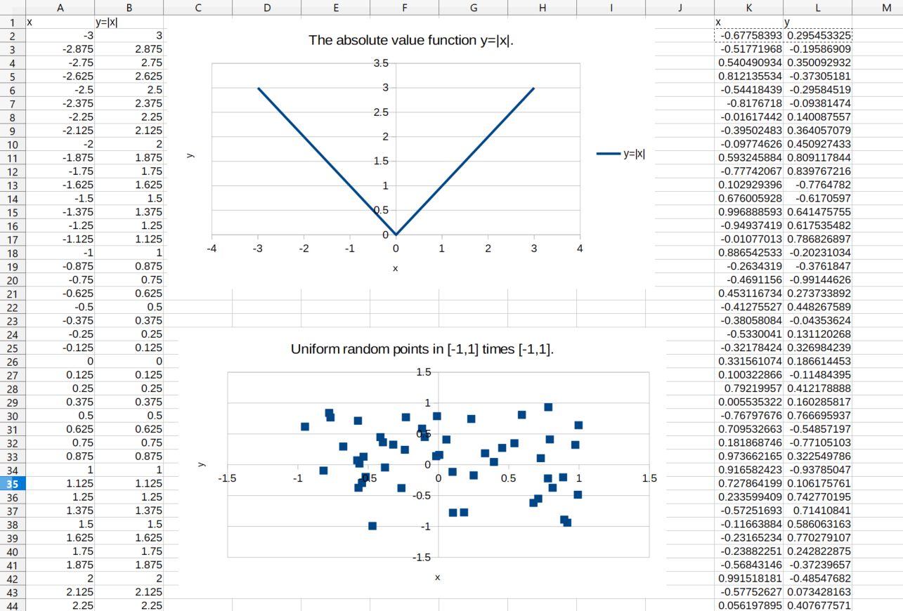
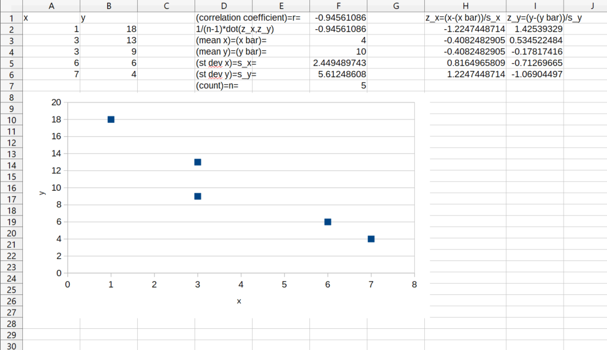
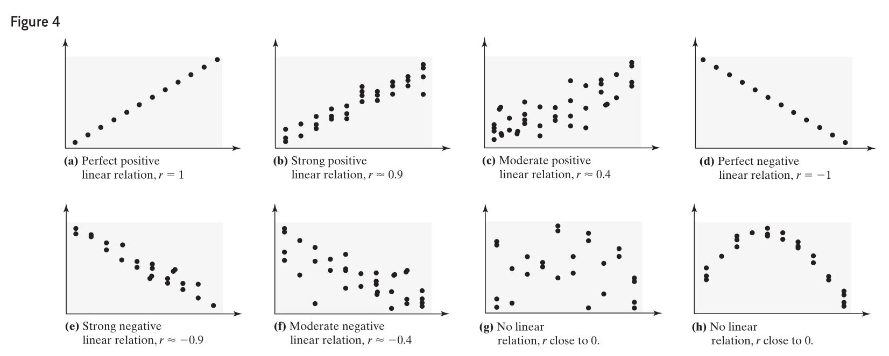
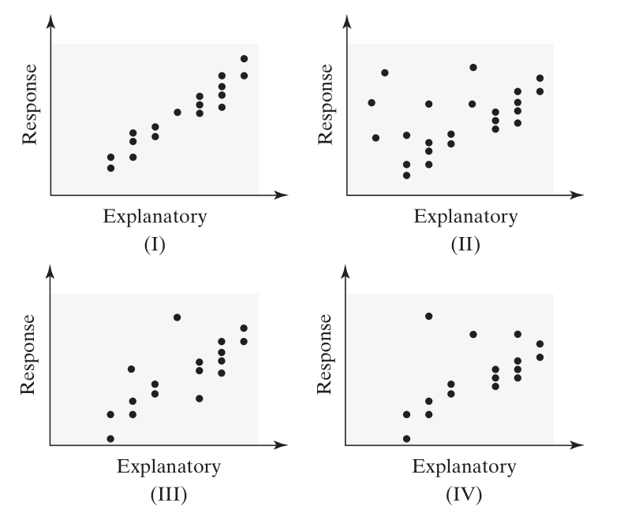
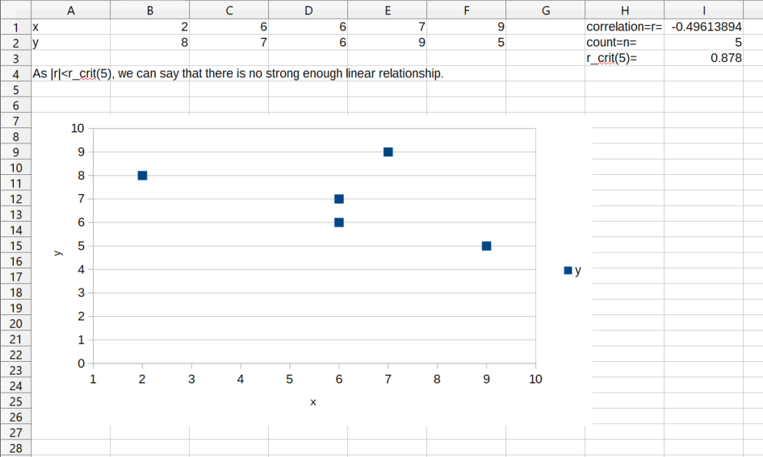
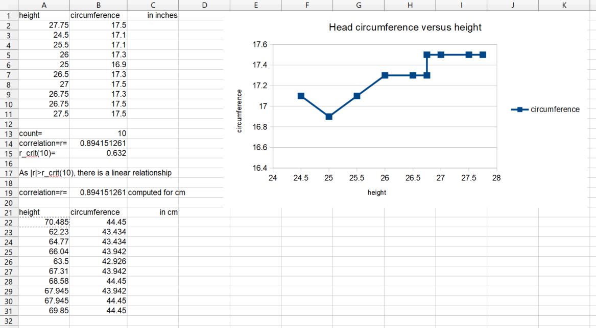
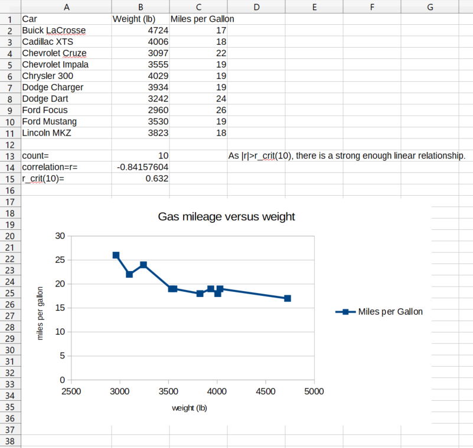
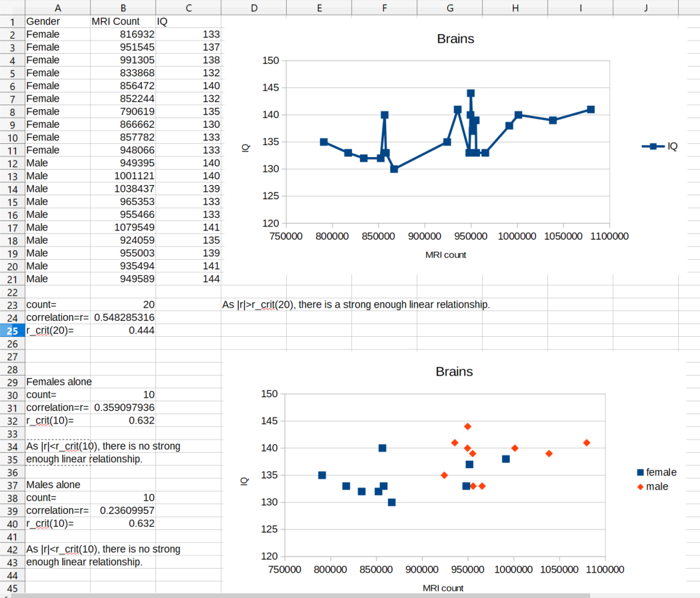
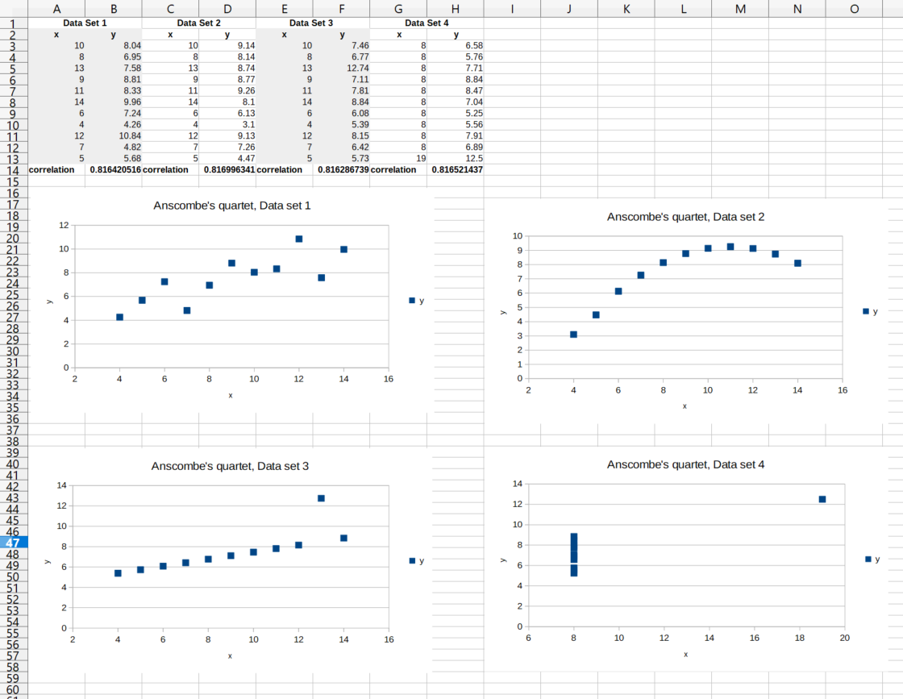

In this set of notes we work through some notions and examples from statistics. You can read the questions here, study the written or handwritten notes, and while doing so, listen to some explanations by clicking on the "play" button.
Lesson 16, Scatter Diagrams and Correlation.
Consider an ordinary \(x,y\) plot, say, \(y=|x|\). We can draw its graph in the \(x,y\) plane, e.g., using a spreadsheet. We call the variable on the \(x\)-axis the independent variable and the variable on the \(y\)-axis the dependent variable, since \(y=f(x)\) is a function of the dependent variable.
We can also plot just a finite set of points \((x,y)\) in the plane, which may not have any or much relation to each other or the \(y\) components may not have much or anything to do with the \(x\) components. In this case, we can use the name scatter plot. Let us look at an example of some random points as well.

If we have two sequences of \(x_i\) and \(y_i\) values of equal length, then we can plot them in the above type of scatter plot. Sometimes, the variables \(y\) and \(x\) are correlated in the sense that say height and weight are correlated, e.g., shorter persons may weigh less than tall persons. We might be able to have a relation \(y=f(x)\), sometimes exactly, or more often as \(y=f(x)+e\), where \(e\) is a random error (possibly small). The simplest function \(f\) to try is a linear function \(f(x)=ax+b\), where \(a,b\) are fixed numbers, so the relation looks like \(y_i=ax_i+b+e_i\). We can try to solve for \(a,b\) in this system of equations as an overdetermined system under some assumptions, e.g., when the error \(e=0\) or at least it has mean zero and is orthogonal (perpendicular) to \(x\). We will discuss this so-called linear regression later in more details. At this stage we can remark that the "slope" coefficient \(a\) has to do with the correlation coefficient of \(x\) and \(y\) (which we will discuss below), and the "intercept" (or "offset" or "bias") term \(b\) has also to do with the centers of mass or means of \(x\) and \(y\).
What is the correlation coefficient? Suppose we have our numbers \(x\), \(y\) equal in number. Then we can form the z-scores \(z_x=\frac{x-\bar x}{s_x}\), \(z_y=\frac{y-\bar y}{s_y}\). We can try to seek a linear relationship between \(z_x\) and \(z_y\) as \(z_y=rz_x+B+e\), where the "slope" is some unknown value \(r\) and the "bias" term \(B\) is in fact zero, since if we take the mean of both sides of the equation \(z_y=rz_x+B+e\), then we get \(0=r\times0+B+0\), i.e., \(B=0\) if the error \(e\) has zero mean (which we assume). It remains to compute \(r\). We can take the dot product of our equation \(z_y=rz_x+e\) with \(z_x\) and we arrive at \(z_y\cdot z_x=r(z_x\cdot z_x)+0\), thus \(r=\frac{z_y\cdot z_x}{z_x\cdot z_x}\), if the error \(e\) is perpendicular to the vector \(z_x\) (which we assume). Hence the formula for \(r\) is \(r=\frac{s_x}{s_y}\cdot\frac{(y-\bar y)\cdot(x-\bar x)}{(x-\bar x)(x-\bar x)}\), i.e., \(r=\frac{s_x}{s_y}\cdot\frac{\sum_{i=1}^n(y_i-\bar y)(x_i-\bar x)}{\sum_{i=1}^n(x-\bar x)^2}\). If we divide the numerator and the denominator by \(n-1\), then we get \(r=\frac{s_x}{s_y}\cdot\frac{\frac1{n-1}\sum_{i=1}^n(x_i-\bar x)(y_i-\bar y)} {\frac1{n-1}\sum_{i=1}^n(x_i-\bar x)^2}\). Recall that the sample standard deviation is given by \(s_x^2=\frac1{n-1}\sum_{i=1}^n(x_i-\bar x)^2\). Hence the formula for \(r\) can be rewritten as \(r=\frac1{n-1}\sum_{i=1}^n\frac{x_i-\bar x}{s_x}\cdot\frac{y_i-\bar y}{s_y}\).
Thus the sample correlation coefficient can be computed as \(r=\frac1{n-1}\sum_{i=1}^n(z_x)_i(z_y)_i\). As the correlation coefficient \(r\) is the dot product or inner product of two unit vectors under the same dot product, its value is just the cosine of the angle in between the two vectors, hence it lies between \(-1,1\), i.e., \(-1\le r\le 1\).
Given two random numbers (such as \(x\), \(y\) above) we can compute a covariance matrix (a two by two matrix), whose two off-diagonal elements are closely related to the correlation coefficient \(r\). (If the variables have standard deviation 1, then the off-diagonal elements are equal to the correlation coefficient.)
The correlation coefficient is also called the Pearson correlation coefficient.
The spreadsheet command to compute the correlation coefficient is
=correl(,).
Example of computing the correlation coefficient in a spreadsheet.

See the attached spreadsheet.
In this spreadsheet we used in cell F1 the built-in command =correl()
for the correlation coefficient, and in F2 we computed the same using
the formula \(r\) given above.
Properties of the Linear Correlation Coefficient
-
The linear correlation coefficient is always between \(-1\) and \(1\), inclusive. That is, \(-1 \le r \le 1\).
-
If \(r = +1\), then a perfect positive linear relation exists between the two variables. See Figure 4(a).
-
If \(r = -1\), then a perfect negative linear relation exists between the two variables. See Figure 4(d).
-
The closer \(r\) is to \(+1\), the stronger is the evidence of positive association between the two variables. See Figures 4(b) and 4(c).
-
The closer \(r\) is to \(-1\), the stronger is the evidence of negative association between the two variables. See Figures 4(e) and 4(f).
-
If \(r\) is close to \(0\), then little or no evidence exists of a linear relation between the two variables. So \(r\) close to \(0\) does not imply no relation, just no linear relation. See Figures 4(g) and 4(h).
-
The linear correlation coefficient is a unitless measure of association. So the unit of measure for \(x\) and \(y\) plays no role in the interpretation of \(r\).
-
The correlation coefficient is not resistant (or robust, i.e., it is sensitive to errors and outliers). Therefore, an observation that does not follow the overall pattern of the data could affect the value of the linear correlation coefficient.
Here is the picture from the book the above passage mentions.

We can decide whether there is a strong enough linear relationship between two samples \(x\) and \(y\) of length (or count) \(n\) based upon whether the absolute value \(|r|>r_{\textrm{crit}}(n)\) exceeds a critial value for the dimension \(n\). Here is a table for these critical values for \(n=2,3,\ldots,30\) from the book.
\(n\) |
\(r_{\textrm{crit}}(n)\) |
3 |
0.997 |
4 |
0.950 |
5 |
0.878 |
6 |
0.811 |
7 |
0.754 |
8 |
0.707 |
9 |
0.666 |
10 |
0.632 |
11 |
0.602 |
12 |
0.576 |
13 |
0.553 |
14 |
0.532 |
15 |
0.514 |
16 |
0.497 |
17 |
0.482 |
18 |
0.468 |
19 |
0.456 |
20 |
0.444 |
21 |
0.433 |
22 |
0.423 |
23 |
0.413 |
24 |
0.404 |
25 |
0.396 |
26 |
0.388 |
27 |
0.381 |
28 |
0.374 |
29 |
0.367 |
30 |
0.361 |
Suppose there is a strong enough linear relationship between a sample of persons’s bloodpressure and the amount of the new bloodpressure lowering magic pill that they took. We would like to claim that the bloodpressure lowering magic pill is lowering their bloodpressure. We cannot claim that simply based upon a correlation coefficient. We can claim that there is an association between the bloodpressure and the amount of magic pill taken.
Question. Match the linear correlation coefficient to the scatter diagrams. The scales on the \(x\)- and \(y\)-axes are the same for each diagram. (a) \(r = 0.787\), (b) \(r = 0.523\), (c) \(r = 0.053\), (d) \(r = 0.946\).

Picture (I) shows the strongest positive linear relationship; we pair it with the largest correlation value: (I)--(d). Picture (III) shows the second best linear relationship; we pair it with the second largest correlation value: (III)--(a). Picture (IV) shows the third best linear relationship; we pair it with the third largest correlation value: (IV)--(b). Picture (II) shows the worst linear relationship; we pair it with the lowest correlation value: (II)--(c). So (a) III, (b) IV, (c) II, (d) I.
Question. (a) Draw a scatter diagram of the data, (b) compute the correlation coefficient, and (c) determine whether there is a linear relation between \(x\) and \(y\).
\(x\) |
2 |
6 |
6 |
7 |
9 |
\(y\) |
8 |
7 |
6 |
9 |
5 |

Question. Height versus Head Circumference. A pediatrician wants to determine the relation that may exist between a child’s height and head circumference. She randomly selects eleven 3-year-old children from her practice, measures their heights and head circumference, and obtains the data shown in the table below.
Height (inches) |
Head Circumference (inches) |
Height (inches) |
Head Circumference (inches) |
27.75 |
17.5 |
26.5 |
17.3 |
24.5 |
17.1 |
27 |
17.5 |
25.5 |
17.1 |
26.75 |
17.3 |
26 |
17.3 |
26.75 |
17.5 |
25 |
16.9 |
27.5 |
17.5 |
Source: Denise Slucki, student at Joliet Junior College
(a) If the pediatrician wants to use height to predict head circumference, determine which variable is the explanatory variable and which is the response variable.
(b) Draw a scatter diagram of the data.
(c) Compute the linear correlation coefficient between the height and head circumference of a child.
(d) Does a linear relation exist between height and head circumference?
(e) Convert the data to centimeters (1 inch = 2.54 cm), and recompute the linear correlation coefficient. What effect did the conversion have on the linear correlation coefficient?

See the attached spreadsheet. (a) The height is the explanatory variable and the head circumference is the response variable.
(c) The correlation coefficient is \(r=0.894\).
(d) As the correlation coefficient in absolute value is greater than the corresponding critical value, we can say that there is a strong enough linear relationship.
(e) The z-score is invariant under multiplication by a positive constant, and so the correlation coefficient (which is computable from the z-scores alone) is also invariant under multiplication by a positive constant; i.e., inches or cm do not matter if the units of measurements are used consistently.
Question. Weight of a Car versus Miles per Gallon. An engineer wanted to determine how the weight of a car affects gas mileage. The following data represent the weights of various domestic cars and their gas mileages in the city for the 2015 model year.
Car |
Weight (lb) |
Miles per Gallon |
Buick LaCrosse |
4724 |
17 |
Cadillac XTS |
4006 |
18 |
Chevrolet Cruze |
3097 |
22 |
Chevrolet Impala |
3555 |
19 |
Chrysler 300 |
4029 |
19 |
Dodge Charger |
3934 |
19 |
Dodge Dart |
3242 |
24 |
Ford Focus |
2960 |
26 |
Ford Mustang |
3530 |
19 |
Lincoln MKZ |
3823 |
18 |
Source: Each manufacturer’s website
(a) Determine which variable is the likely explanatory variable and which is the likely response variable.
(b) Draw a scatter diagram of the data.
(c) Compute the linear correlation coefficient between the weight of a car and its miles per gallon in the city.
(d) Does a linear relation exist between the weight of a car and its miles per gallon in the city?

See the attached spreadsheet. (a) The explanatory variable is the weight and the response variable is the gas mileage.
(c) The correlation coefficient is \(r=-0.842\).
(d) As the absolute value of the correlation coefficient is greater than the corresponding critical value, we can say that there is a strong enough linear relation.
Question. Does Size Matter? Researchers wondered whether the size of a person’s brain was related to the individual’s mental capacity. They selected a sample of right-handed introductory psychology students who had SAT scores higher than 1350. The subjects took the Wechsler Adult Intelligence Scale-Revised to obtain their IQ scores. MRI scans were performed at the same facility for the subjects. The scans consisted of 18 horizontal MR images. The computer counted all pixels with a nonzero gray scale in each of the 18 images, and the total count served as an index for brain size.
Gender |
MRI Count |
IQ |
Gender |
MRI Count |
IQ |
Female |
816,932 |
133 |
Male |
949,395 |
140 |
Female |
951,545 |
137 |
Male |
1,001,121 |
140 |
Female |
991,305 |
138 |
Male |
1,038,437 |
139 |
Female |
833,868 |
132 |
Male |
965,353 |
133 |
Female |
856,472 |
140 |
Male |
955,466 |
133 |
Female |
852,244 |
132 |
Male |
1,079,549 |
141 |
Female |
790,619 |
135 |
Male |
924,059 |
135 |
Female |
866,662 |
130 |
Male |
955,003 |
139 |
Female |
857,782 |
133 |
Male |
935,494 |
141 |
Female |
948,066 |
133 |
Male |
949,589 |
144 |
Source: L. Willerman, R. Schultz, J. N. Rutledge, and E. Bigler (1991). "In Vivo Brain Size and Intelligence", Intelligence, 15, 223-228.
(a) Draw a scatter diagram treating MRI count as the explanatory variable and IQ as the response variable. Comment on what you see.
(b) Compute the linear correlation coefficient between MRI count and IQ. Are MRI count and IQ linearly related?
(c) A lurking variable in the analysis is gender. Draw a scatter diagram treating MRI count as the explanatory variable and IQ as the response variable, but use a different plotting symbol for each gender. For example, use a circle for males and a triangle for females. What do you notice?
(d) Compute the linear correlation coefficient between MRI count and IQ for females. Compute the linear correlation coefficient between MRI count and IQ for males. Are MRI count and IQ linearly related? What is the moral?

See the attached spreadsheet. If we treat the data together for both women and men, there seems to be a strong enough linear relationship. If we treat the women alone, there is no strong enough linear relationship. If we treat the men alone, there is no strong enough linear relationship.
Question. Draw Your Data! Consider the four data sets shown below, called Anscombe’s quartet.
Data Set 1 |
Data Set 2 |
Data Set 3 |
Data Set 4 |
\(x\), \(y\) |
\(x\), \(y\) |
\(x\), \(y\) |
\(x\), \(y\) |
10, 8.04 |
10, 9.14 |
10, 7.46 |
8, 6.58 |
8, 6.95 |
8, 8.14 |
8, 6.77 |
8, 5.76 |
13, 7.58 |
13, 8.74 |
13, 12.74 |
8, 7.71 |
9, 8.81 |
9, 8.77 |
9, 7.11 |
8, 8.84 |
11, 8.33 |
11, 9.26 |
11, 7.81 |
8, 8.47 |
14, 9.96 |
14, 8.10 |
14, 8.84 |
8, 7.04 |
6, 7.24 |
6, 6.13 |
6, 6.08 |
8, 5.25 |
4, 4.26 |
4, 3.10 |
4, 5.39 |
8, 5.56 |
12, 10.84 |
12, 9.13 |
12, 8.15 |
8, 7.91 |
7, 4.82 |
7, 7.26 |
7, 6.42 |
8, 6.89 |
5, 5.68 |
5, 4.47 |
5, 5.73 |
19, 12.50 |
Source: Frank Anscombe. "Graphs in Statistical Analysis", American Statistician 27: 17-21, 1973.
(a) Compute the linear correlation coefficient for each data set.
(b) Draw a scatter diagram for each data set. Conclude that linear correlation coefficients and scatter diagrams must be used together in any statistical analysis of bivariate data.

See the attached spreadsheet. With his famous quartet of data, Anscombe pointed out that while regression related data may be approximately the same, the look and nature of data sets can wildly vary. As we can see in his example above, the four correlation coefficients are all approximately equal to \(0.816\), while the look of the four data sets make them quite different. If possible, plot (some aspects of) the data along with some calculations.